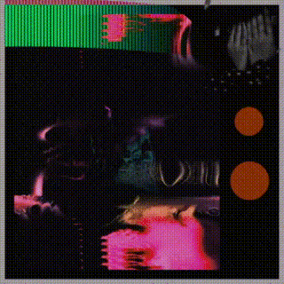

06 / Selected Work
Maker Faire 2024

Made for Maker Faire 2024 to promote CADRE SO. The projection responds to a participant moving through the installation.
Back to projects ↗06 / Selected Work

Made for Maker Faire 2024 to promote CADRE SO. The projection responds to a participant moving through the installation.
Back to projects ↗